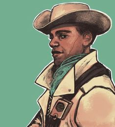

Preston Garvey originally enlisted with the Minutemen under Colonel Hollis at the age of seventeen. An avid believer in the espoused justice of the Minutemen cause, Preston joined under the direct command of Hollis himself. Things began to change for the worse when settlements under the protection of the Minutemen grew complacent. Freed from the greater concerns of the erstwhile dangers of the Commonwealth, settlements increasingly neglected their obligations to the collective in favor of petty self-interests.By the time the Sole Survivor arrives to help Preston, he is leading the last pocket of people under the protection of the Minutemen. His group numbers only five - a mere fraction of the original twenty who escaped Quincy under his guidance. If Preston Garvey is saved he will mention he is the last Minuteman standing, and he also mentioned he was not literally as there were many former Minutemen out there who gave it up in disgust or turned away from the ideals (Examples of this being Clint, James Wire, and Ronnie Shaw).